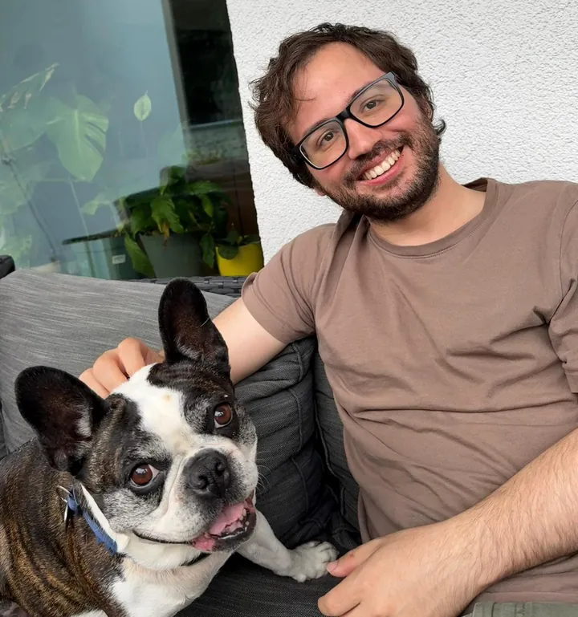
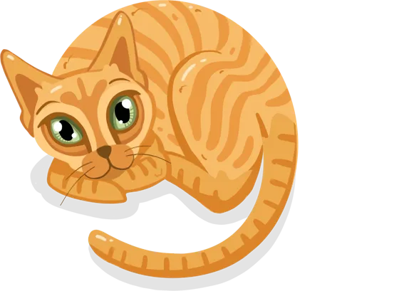
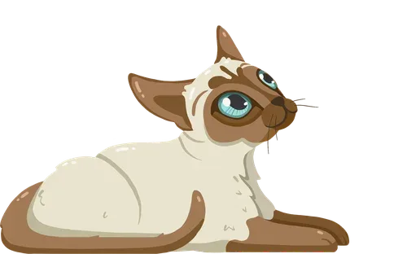
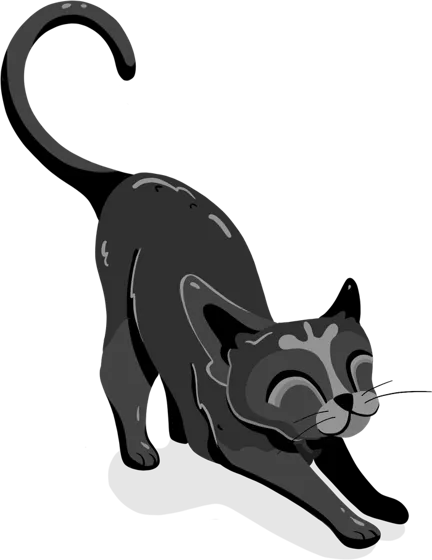
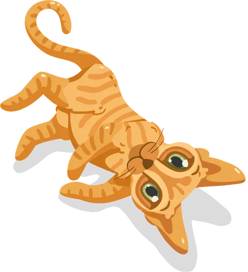
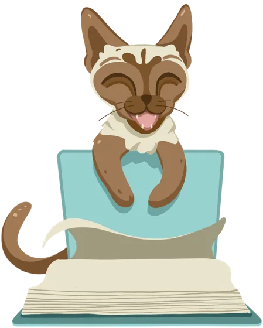

Seis pistas, un sospechoso y media hora para resolverlo.

Juan Valeroa cargo de la investigación

De cada 10 alumnos, ¿cuántos cree que terminaron el último libro que les dieron?
La guardamos para el final.



